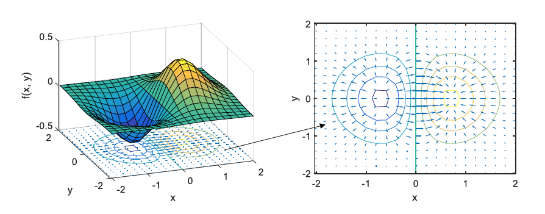

| Linear transformation of vector spaces | |
| Inner and Outer Product |
\( u = \begin{pmatrix}
u_1 \\
u_2 \\
u_3
\end{pmatrix}
\),
\( v = \begin{pmatrix}
v_1 \\
v_2 \\
v_3
\end{pmatrix}
\) Dot Product
$$
\begin{align}
u\cdot v &= u^\intercal v \\
&= \begin{pmatrix} u_1 \quad u_2 \quad u_3 \end{pmatrix} \begin{pmatrix} u_1 \\ u_2 \\ u_3 \end{pmatrix} \\
&=u_1 v_1 + u_2 v_2 + u_3 v_3
\end{align}
$$
|
| Gradient of a scaler field | For a scaler field f , \[ \nabla f = \frac{\partial f}{\partial x} \hat{i} + \frac{\partial f}{\partial y} \hat{j} + \frac{\partial f}{\partial z} \hat{k} \] ∇ f = a vector field that gives the direction and magnitude of the greatest changes of each point |
| Divergence of a vector |
For a vector u,
\[ \nabla \cdot \textbf{u} = {\partial \over \partial x} u_x + {\partial \over \partial y} u_y + {\partial \over \partial z} u_z \]
\(\nabla \cdot u_x > 0 \) indicates net flow OUT of point x \(\nabla \cdot u_x < 0 \) indicates net flow INTO point x  |
| Curl of a vector |
For F = ( Fx, Fy, Fz ) , $$ \begin{align} \large \nabla \times F &= \Large \left| { \begin{matrix} \hat{i} & \hat{j} & \hat{k} \\ \frac{\partial}{\partial x} & \frac{\partial}{\partial y} & \frac{\partial}{\partial z} \\ F_x & F_y & F_z \end{matrix} } \right| \\ \\ &= \large (\frac{\partial F_z}{\partial y} - \frac{\partial F_y}{\partial z})\hat{i} + (\frac{\partial F_x}{\partial z} - \frac{\partial F_z}{\partial x})\hat{j} + (\frac{\partial F_y}{\partial x} - \frac{\partial F_x}{\partial y})\hat{k} \end{align} $$ |
| Laplace Transform |
\[ F(s) = \int^{\infty}_{0} f(t) e^{-st} ~dt \]
where
\( s = \sigma + i \omega \)
|
| Fourier Transform |
\[ F(\omega) = \int^{\infty}_{-\infty} f(t) e^{- i \omega t } dt \]
where
\(\omega = 2\pi f\)
|
| Taylor Series |
\[ f(a) + \frac{f'(a)}{1!}(x-a) + \frac{f''(a)}{2!}(x-a)^2 + \frac{f'''(a)}{3!}(x-a)^3 + ...\]
Maclaurin Series = Taylor Series centering at zeros i.e. a=0 |
| Even/Odd Function | Even Function \[ f(-x) = f(x) \] Odd Function \[ f(-x) = -f(x) \] |
| Algebra |
Linear-Quadratic Functions
Solutions can be represented by the intersection of 1 linear equation and 1 quadratic equation
|
| Eigenvector, eigenvalue |
For a transformation, $$ A = \begin{bmatrix} x_x & y_x \\ x_y & y_y \end{bmatrix} $$ The vectors that stay at their directions after transformation = eigenvector \(\large \vec{v}\) The factor of which the vectors changed in size = eigenvalue \( \large\lambda\) Hence, \[ \large A \vec{v} = \lambda \vec{v} \]
\[ A \vec{v} = (\lambda I) \vec{v} \]
Find λ by solving
\[ det(A-\lambda I) = 0\]
Eigenfunction
\[ Af=\lambda f \]
|
| Determinant [1] |
= the area change by a transformation \[ A = \begin{bmatrix} 1 & 1 \\ 0 & 1 \end{bmatrix},~det(A) = 1\]
the transformation A does not change the area of a pixel
\[ B = \begin{bmatrix} 3 & 0 \\ 0 & 2 \end{bmatrix} ,~det(B) = 6 \]
\(det(B) = 6\) means after transforming a place using B, a pixel with area of a will be scaled up by 6
\[ C = \begin{bmatrix} 4 & 2 \\ 2 & 1 \end{bmatrix} ,~ det(C)=0 \] \[ D = \begin{bmatrix} 1 & 2 \\ 3 & 4 \end{bmatrix} ,~ det(D)=-2 \]
Negative det means the orientation of place is inverted, i.e. right hand rule x × y signed flipped
|
| Bézier curve |
| Complex Conjudate |
B = A* B is the complex conjugate of A when all j in A are substituted with -j |